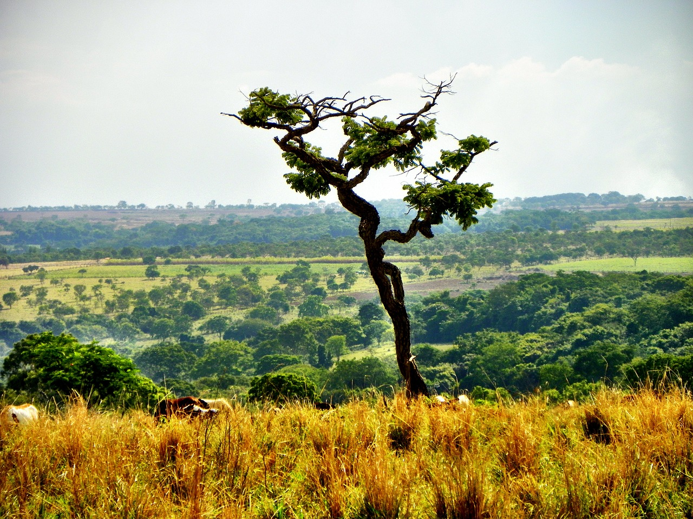

denomina-se "floresta" qualquer vegetação que apresente predominância de indivíduos lenhosos,
onde as copas das árvores se tocam formando um dossel.
Área vinculada ao curso dos rios normalmente forma zonas de vegetação abundantes: grandes árvores, plantas que se adaptam à sombra das árvores, arbustos, trepadeiras e flores. A exuberância das matas se deve a dois motivos: a qualidade do solo e a influência da água dos rios sobre a natureza. Deve-se ressaltar que os níveis de umidade e a sombra destas áreas desenvolvem fungos e samambaias. Esta circunstância torna esse tipo de vegetação rasteira em um ecossistema de alto valor ecológico

Termo bosque se refere às áreas que possuem alta densidade de árvores. Os bosques são algo similar a uma comunidade, mas com plantas, que cobrem uma importante parte do planeta Terra e que além do mais funcionam com o habitat de alguns animais, como moduladores dos fluxos hidrológicos e que apresentam um papel tão determinante como importante, como é a conservação do solo.
Pântano é um ecossistema comum em países do hemisfério norte, conhecida por planícies parciais e zonas úmidas.
Ele é formado por águas paradas e pouco profundas e compreendem um dos tipos de ecossistemas das chamadas zonas úmidas. Elas se localizam entre os ecossistemas terrestres e aquáticos. Este ambiente também pode ser encontrado na foz de grandes rios. Sobretudo nos deltas, devido à sedimentação de aluviões e limos em terras ao nível do mar.
Para mais informações visite este link: link https://brasilescola.uol.com.br/geografia/savana.htm"
Savana é um bioma ou ecossistema que ocorre de maneira predominante na zona tropical do planeta Terra, onde se distribuem climas tropicais caracterizados pela moderada amplitude térmica anual (isto é, variação de temperaturas) e, principalmente, pela alternância entre períodos secos, geralmente no inverno, e chuvosos, que correspondem ao verão na maioria das áreas."

Conhecido como savana brasileira e possui uma grande biodiversidade. Sua vegetação possui características predominantes, como árvores de tronco grosso e tortuoso, além de gramíneas e arbustos. O clima do Cerrado é tropical sazonal, apresentando duas estações definidas: uma seca e outra chuvosa.
